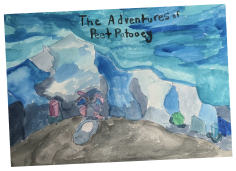
The “Adventures of Peet Patooey” is a game that highlights every path Peet Patooey takes to find his way home.
He is first pictured as this very distorted, delusion, freakish psychopath lost in an alternate universe. He is
sad, depressed, dull and can’t figure out what to do; he has little to no memory of his home. Until one day, he
musters a little courage to walk towards the unknown, finding these weird objects that are sensibly connected to
his home. One by one, Peet Patooey finds these particular objects and starts to feel a sensation of confidence,
happiness, and inspiration.
In the above cover photo, the crystals represent lost memories, the
objects he will find. Peet Patooey is pictured as a delusional, depressed psychopath because he is lost, scared,
anxious, stressed. He is placed in this abnormal universe, so this is why everything is dark. The shadow in
front of him represents his normal self. Which is a light colour because once the player leads him home, he
starts to get brighter.
Arashjot, Isabella, Cam, Christina
2020
Story game telling, adventure, text-based, single player
Works
on most browsers, except for Internet Explorer 7
English
View site on desktop for full
experience
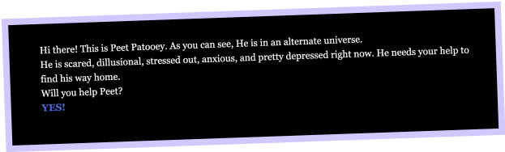
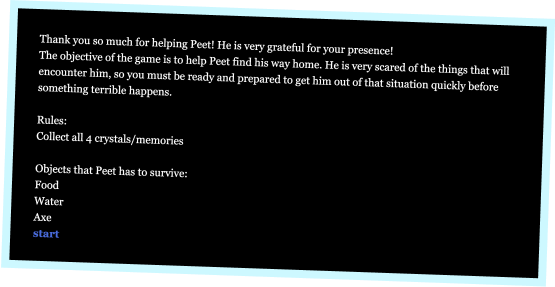
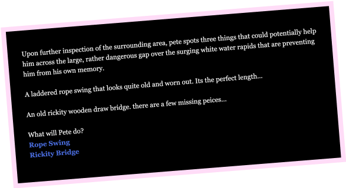
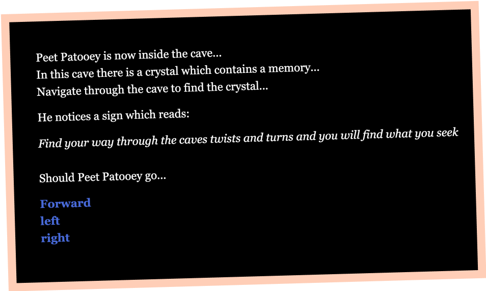
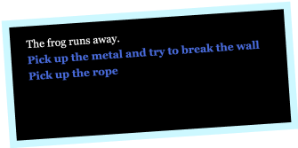
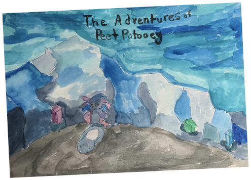
watch the trailer...
creators
year
tags
specifications
languages supported
The “Adventures of Peet Patooey” is a game that highlights every path Peet Patooey takes to find his way home.
He is first pictured as this very distorted, delusion, freakish psychopath lost in an alternate universe. He is
sad, depressed, dull and can’t figure out what to do; he has little to no memory of his home. Until one day, he
musters a little courage to walk towards the unknown, finding these weird objects that are sensibly connected to
his home. One by one, Peet Patooey finds these particular objects and starts to feel a sensation of confidence,
happiness, and inspiration.
In the above cover photo, the crystals represent lost memories, the objects he will find. Peet Patooey is
pictured as a delusional, depressed psychopath because he is lost, scared, anxious, stressed. He is placed in
this abnormal universe, so this is why everything is dark. The shadow in front of him represents his normal
self. Which is a light colour because once the player leads him home, he starts to get brighter.
Arashjot, Isabella, Cam, Christina
2020
Story game telling, adventure game, text-based, single player
Works on most browsers, except for Internet Explorer 7
English
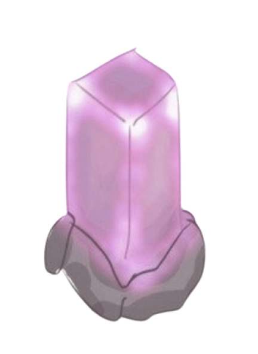
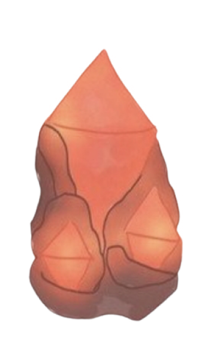
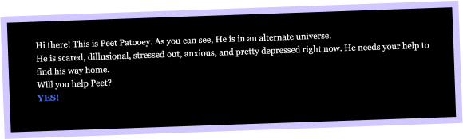
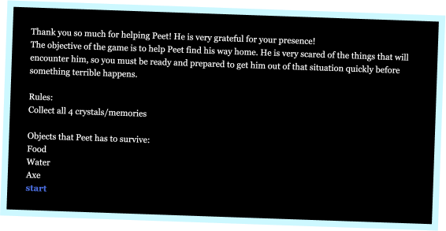
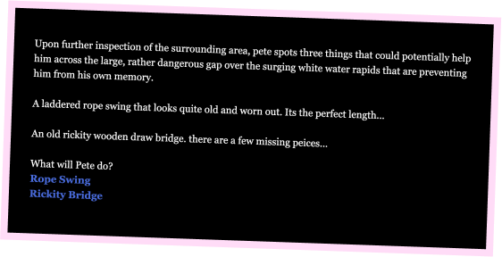
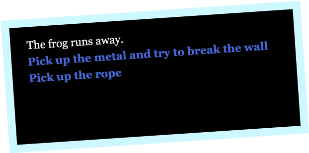
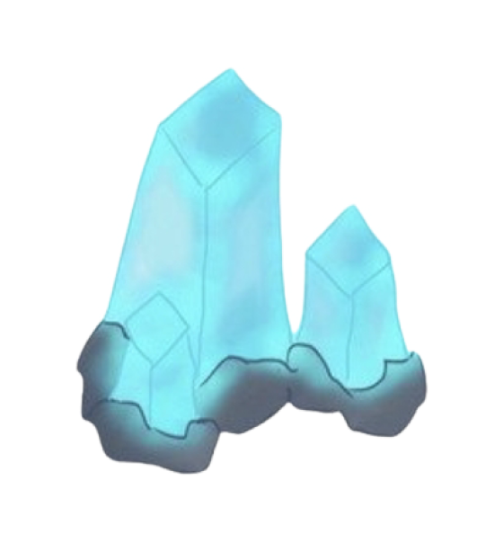
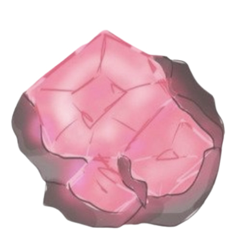